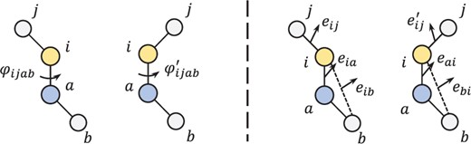

Research
Machine Learning for Small Molecule Mass Spectrometry and Chromatography

A Task-Specific Transfer Learning Approach to Enhancing Small Molecule Retention Time Prediction with Limited Data
Yuhui Hong, & Haixu Tang (2025).
bioRxiv 2025.06.26.661631.
[Preprint]
[Code]
TSTL (Task-Specific Transfer Learning) is introduced as a training strategy for predicting retention times
in various LC systems with limited training data.
Evaluated across 6 benchmark datasets from different LC systems using 5 deep neural network architectures,
TSTL achieved significant improvements in prediction accuracy,
increasing average R² from 0.587 to 0.825 with superior data efficiency.

FIDDLE: a Deep Learning Method for Chemical Formulas Prediction from Tandem Mass Spectra
Yuhui Hong, Sujun Li, Yuzhen Ye, & Haixu Tang (2024).
bioRxiv 2024.11.25.625316. (accepted by Nature Communications).
[Preprint]
[Code]
[PyPI package - msfiddle]
FIDDLE (Formula IDentification by Deep LEarning) is introduced as a deep learning-based method for identifying chemical formulas from MS/MS data.
It is trained on over 38,000 molecules and 1 million MS/MS spectra collected under various conditions,
including collision energy and precursor types, using Quadrupole Time-of-Flight (QTOF) and Orbitrap instruments.

Enhanced Structure-Based Prediction of Chiral Stationary Phases for Chromatographic Enantioseparation from 3D Molecular Conformations
Yuhui Hong, Christopher J Welch, Patrick Piras, & Haixu Tang (2024).
Analytical Chemistry, 96(6), 2351-2359.
[Paper]
[Code]
3DMolCSP leverages a 3D molecular conformation representation algorithm,
alongside a dataset of over 300k enantioseparation records.
This approach significantly improves enantioselectivity predictions,
enabling more efficient and informed decisions in chiral chromatography.

3DMolMS: Prediction of Tandem Mass Spectra from Three Dimensional Molecular Conformations
Yuhui Hong, Sujun Li, Christopher J Welch, Shane Tichy, Yuzhen Ye, & Haixu Tang (2023).
Bioinformatics, btad354.
[Paper]
[Code]
[Documentation]
[PyPI package - molnetpack]
[Workflow on Konia]
3DMolMS is a deep neural network model that predicts MS/MS spectra from 3D conformations.
The learned molecular representation also enhances predictions of chemical properties,
such as elution time and collisional cross section, aiding compound identification.
Computational Methods for Proteomics Mass Spectrometry

Koina: Democratizing machine learning for proteomics research
Ludwig Lautenbacher, Kevin L Yang, Tobias Kockmann, Christian Panse,
Wassim Gabriel, Dulguun Bold, Elias Kahl, Matthew Chambers,
Brendan X MacLean, Kai Li, Fengchao Yu, Brian C Searle,
Damien Beau Wilburn, Mohammad Reza Zare Shahneh, Yuhui Hong, Haixu Tang,
Mingxun Wang, Ralf Gabriels, Robbin Bouwmeester, Robbe Devreese, Jesse Angelis,
Eduard Sabidó, Tobias K Schmidt, Alexey I Nesvizhskii, Mathias Wilhelm (2025).
Nature Communications, 16(1), 9933.
[Paper]
[Code]
Koina is a user-friendly platform that enables proteomics researchers to apply machine learning without coding expertise.
It offers pre-configured workflows for common tasks like, tandem mass spectra, retention time and collisional cross section prediction,
along with customizable options for advanced users.
Reliable and Transparent Microbiome-Based Host Phenotype Prediction **
* equal contribution as first author** this direction of work was conducted with colleraboration from Yuzhen Ye's lab

Confounder-free predictive models for microbiome-based host phenotype prediction
Mahsa Monshizadeh*, Yuhui Hong*, Yuzhen Ye (2024).
bioRxiv, 2025.01.29.635502.
[Paper]
[Code]
Confounding factors like medications can severely bias microbiome-based disease predictions,
leading to spurious associations. This study developed confounder-free models using adversarial optimization
to remove biases while preserving true phenotype-microbiome associations.
Tested on type 2 diabetes data with metformin as confounder,
both FNN_CF and MicroKPNN_CF outperformed conventional approaches by identifying genuine disease markers.
MicroKPNN_CF offered superior interpretability despite slightly lower accuracy than FNN_CF.

Multitask knowledge-primed neural network for predicting missing metadata and host phenotype based on human microbiome
Mahsa Monshizadeh*, Yuhui Hong*, Yuzhen Ye (2024).
Bioinformatics Advances, vbae203.
[Paper]
[Code]
Metadata like age and gender are often missing in microbiome studies but crucial for accurate disease prediction.
MicroKPNN-MT addresses this by either using available metadata as input or predicting it from microbiome profiles.
Tested across 25 diseases,
the model showed that incorporating real or predicted metadata improves both prediction accuracy and generalizability,
making it a practical tool for microbiome-based disease prediction with incomplete data.